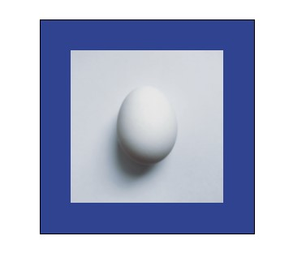
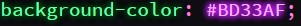

TIPO DE ETIQUETAS
GLOSARIO
En HTML y CSS tenemos diferente tipos de etiquetas cada uno con un propósito en particular una etiqueta se puede componere de dos maneras.
🦋TIPOS DE ETIQUETAS🦋
Etiquetas que solo se aperturan
Etiquetas que tienen una apertura y un cierre
Este tipo de etiqueta común mente se utilizan
para indicar una dirección u origen se
componen por argumento u opciones tales
como src href.
Este tipo de etiquetas común mente se
utilizan para encerrar un contenido tales como
texto img entre otros.
🐝Listado de etiquetas dirigidas a texto:
<p> </p> se utiliza para colocar un texto
<h1> </h1> se utiliza para colocar un titulo
<ul> </ul> se utiliza para definir una lista desordenada
<li> </li> se utiliza para crear los elementos de la lista
<br> se utiliza para hacer un salto de línea
<body> </body> se utiliza para definir el cuerpo de la pagina y crear contenido dentro de el
<div> </div> Representa un contenedor genérico sin ningún significado especial.
🐛Listado de etiquetas dirigidas a objetos:
<a> se utiliza para colocar un vinculo
<img> se utiliza para llamar una imagen
<head> </head> se utiliza para crear la parte principal provee informacion general "metadatos" de la pagina
<title> </title> se se muestra el nombre del documneto en la pestaña del navegador
<header> </header> se utiliza para crear la navegacion
<nav> </nav> se utiliza para proporcionar enlaces de navegacion
<footer> </footer> se utiliza para definir el pie de página de un documento
<section> </section> se utiliza para crear secciones y definir contenidos dentro de el
<link> de utiliza para relacionar un documento y un recurso externo.
<table> </table> se utiliza para crear una tabla
<tr> </tr> se utiliza para poner texto en una tabla
<td> </td> se utiliza para poner texto en una tabla
<title> </title> se utiliza para definir el nombre que se asignara a la pagina
🐌Listado de propiedades css dirigidas a textos:
color : #ffffff; se utiliza para cambiar el color de letra un texto
background-color: #ffffff; se utilice para dar un fondo cin un color
font-size: 1px; se utiliza para definir el tamaño de un texto
font-family: *****; se utiliza para definir el tipo de fuente
text-align: center; se utiliza para definir la posicion de un texto
text-decoration; se utiliza para aplicar algun estilo de subrayado o quitarselo
🐞Listado de propiedades dirigidas a objetos:
width: 0px; se utiliza para definir el ancho de un elemento
height: 0px; se utiliza para definir el alto de un objeto
border: border-width, border-style, border-color; se utiliza para definir los valores que se desean dar a un objeto
padding: 0px; se utiliza para definir el borde de un elemento y su contenido
background-color: #ffffff; se utiliza para definir el color de fondo que se desea en un elemento
margin: 0px; se utiliza para definir el borde de un elemento para que solo se encuentre dentro de la caja.
flex-wrap: specifica si los elementos "hijos" son obligados a permanecer en una misma línea o pueden fluir en varias líneas.
🍄Lista de etiquetas dirigidas al texto🍄
<p> </p> se utiliza para colocar un texto
HTML
CSS
EJEMPLO
<p>Hola</p>
color:
<h1> </h1> - <h6> </h6> se utilizan para colocar titulos
HTML
CSS
EJEMPLO
<h1>Lu</h1>
color:
<li> </li> se utiliza para definir los elementos de una lista
<ul> </ul> se utiliza para hacer una lista no ordenada
HTML
CSS
EJEMPLO
<ul>
color:
<li> </li> se utiliza para definir los elementos de una lista
<ol> </ol> se utiliza para hacer una lista ordenada
HTML
CSS
EJEMPLO
<ol>
color:
<br> se utiliza para hacer un salto de línea
HTML
ETIQUETA
EJEMPLO
<br>
Este es <br> un ejemplo
<body> </body> es el cuerpo de la pagina en el cual van los elementos y etiquetas que colocaremos
HTML
ETIQUETA
EJEMPLO
<body> </body>
<body>
🍄Lista de etiquetas dirigidas a objetos🍄
<a> se utiliza para colocar un vinculo
HTML
ETIQUETA
EJEMPLO
<a href"https://
color:
<img> se utiliza para llamar una imagen
HTML
ETIQUETA
EJEMPLO
<img src "https://p1.pxfuel.com/
width:

<table> </table> se utiliza para crear una tabla
HTML
ETIQUETA
EJEMPLO
<table>
width:
🍄Listado de propiedades css dirigidas a textos🍄
color
CSS
EJEMPLO
color : #ffffff/red,blue,yellow;
font-size
CSS
EJEMPLO
font-size: 1px; Se utiliza para definir el tamaño de un texto
font-family
CSS
EJEMPLO
font-family: cursive, fantasy, inherit,
text-align:
CSS
EJEMPLO
text-align: center,end, inherit, justify;
🍄Listado de propiedades dirigidas a objetos🍄
width
CSS
EJEMPLO
width: 0px; se utiliza para definir el ancho de un elemento
height
CSS
EJEMPLO
height: 0px; se utiliza para definir el alto de un objeto
border
CSS
EJEMPLO
border: 1px solid black;
background-color
CSS
EJEMPLO
background-color: #ffffff; se utiliza para definir el color

margin
CSS
EJEMPLO
margin: 0px; se utiliza para definir el borde
Como se conecta un css en html
Karen Stephanye Ical Boror